英文
英文豪等
编者按
光在物质媒介中的传播速度比在真空中的慢，但通常只慢一点点。然而，与量子物理相关的干涉效应原则上可以使光速在特别设计的介质中显著变慢。本文中，莱娜·韦斯特戈·豪和其同事们在超冷钠原子气体中展示了这种效应：使用与测试光束成直角传播的激光束来制备原子，使得其中的一部分处在特定的电子激发态。测试光束中的光，被这些原子反复吸收和重新发射，以每秒17米的速度传播，大约为真空中光速的2,000万分之一。 英文
基于量子干涉效应的技术被积极研究用来操纵量子系统中的光学性质[1]。其中的一个例子就是电磁感应透明，一种允许光脉冲在其他状况下不透明的介质中传播的量子现象[2-5]。在此，我们报道了在超冷钠原子气中电磁感应透明的实验验证，光脉冲以在真空中光速的2,000万分之一的速度在该介质中传播。气体通过激光和蒸发制冷被降温至纳开（10－9 K）[6-10]。控制介质光学性质的量子干涉通过与脉冲“探测”光束成直角传播的“耦合”激光束来建立。在纳开温度下，折射率随探测频率可以发生非常急剧的变化。与高原子密度相结合，就会导致所观察到的极低光速。我们将原子云冷却至玻色–爱因斯坦凝聚临界温度[11-13]以下（引起处于囚禁势量子基态的碱金属原子的宏观布居），由于原子数密度增大，我们观测到更低的脉冲传播速度（17 m·s－1）。经过测算，本文报道了该体系的非线性折射率系数为0.18 cm2·W－1，发现该系统显示出非常大的光学非线性，这对于量子光学的研究而言具有潜在的基础和技术吸引力。 英文
本实验是在降温至纳开的钠原子中进行的。文献14中对我们的原子冷却装置有一些细节性的描述。从“烛台”原子束源[15]发出的原子在塞曼减速器中被减速，然后被加载到一个磁光阱中。若干秒后我们在1 mK温度，6×1011 cm－3密度下采集到一个由1010个原子组成的原子云。这些原子随后被偏振梯度冷却若干毫秒至50 μK，并被光泵抽运至F=1的基态，原子平均布居于三个磁子能级上。然后我们关闭所有的激光束，并用磁场将原子限制在“4 Dee”阱[14]中。只有处于MF=－1态的原子，其磁偶极矩与磁场方向（被选作量子化轴）相反，被捕获于非对称的谐振势阱中。这个磁过滤使所有的样品原子都处于同一原子态（图1b中的量子态
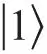
），这就使下文所述的原子绝热光学制备和对原子云最低限度的加热成为可能。 英文
接下来我们将原子蒸发制冷38秒至玻色–爱因斯坦凝聚的临界转变温度Tc。调整磁场，绝热地减小势阱的梯度。这样所获得的势阱沿4 Dee势阱对称轴（z）方向的频率fz=21 Hz，横向频率fx=fy=69 Hz。偏置场平行于z轴，为11 G。当温度完全低于Tc，我们只剩下处于凝聚态的一百万到两百万个原子。在这些参数下，转变发生在Tc=435 nK，原子云峰值密度为5×1012 cm－3。 英文
我们现在来加一线偏振激光束，即耦合光束，将之调谐至无粒子分布的超精细态
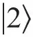
和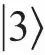
之间的跃迁（图1b）。该光束将态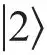
和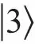
相耦合，从而对一更弱的调谐在态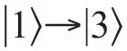
跃迁的探测激光光束（左旋圆偏振）产生了量子干涉。在耦合激光和探测激光同时存在时，原子的稳定本征态（“暗”态）是两个超精细基态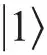
和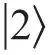
的相干叠加。概率幅比值被设置为两激光对所激发的原子偶极矩的贡献恰好相抵消。量子干涉发生在探测频率的一狭窄的范围内，宽度由耦合激光功率决定。 英文
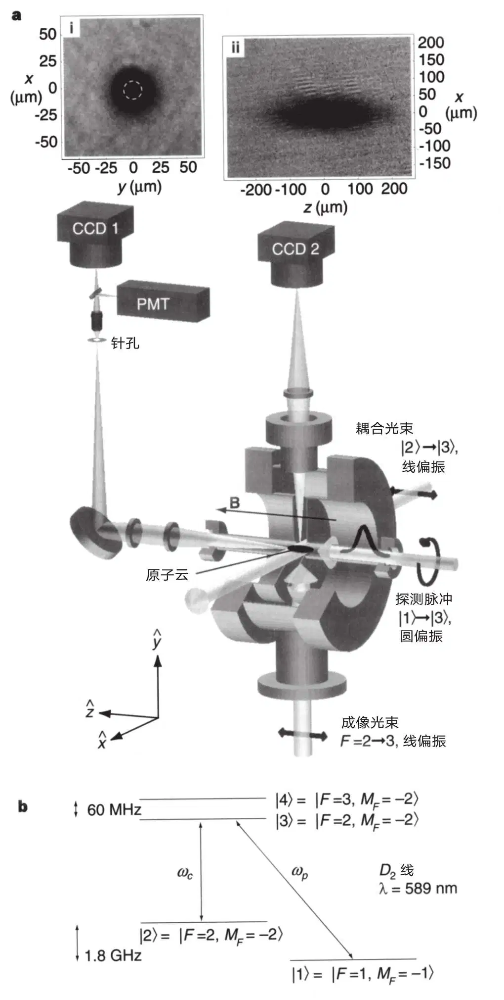
图1．实验装置图。一“耦合”激光束沿x轴传播，其线偏振方向z轴上加有11 G的偏置场。“探测”激光脉冲沿z轴传播，为左旋圆偏振。利用摄像机CCD1前的转向镜，我们可以引导探测光速进入摄像机或者进入光电倍增管（PMT）。对于脉冲延迟的测量，我们在成像光路中一个外部的成像平面上放置一个针孔，并选择探测光束在原子云中心直径为15 μm的小区域（插图（i）中虚线圆所示）。脉冲延迟通过PMT测量。沿y轴传播的成像光束被用来使原子云在CCD2上成像，以获得原子云在沿脉冲传播方向（z轴）上的长度，并以此来确定光速。插图（ii）为降温至450 nK的原子，即在临界温度Tc以上15 nK。（注意该成像光束不能与探测光束或者耦合光束同时打开）。原子云的位置和在x和y两横向上的直径由CCD1测得。插图（i）为一凝聚态的成像图。 英文
基于本文典型参数所确定的谐振频率，图2a为计算所得的探测光束透射率随其频率失谐的变化曲线。当
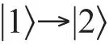
跃迁不存在失相时，量子干涉是完美的，在线中心，透射率应该是1。图2b给出了探测光束的折射率与失谐的函数关系。由于我们的纳开温度样品中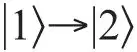
跃迁时非常小的多普勒展宽，施加非常小的耦合强度都会导致一个宽度比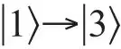
跃迁的自然线宽窄很多的透明度峰。相应地，色散曲线比通过其他任何技术所获得的都更陡，这也就导致了本文所述的前所未有的极低群速度。电磁脉冲传播的群速度vg为[16-19]：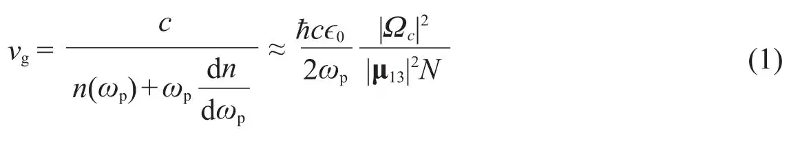
其中，n(ωp)为探测频率ωp(rad·s－1)时的折射率，|Ωc|2为耦合激光的拉比频率的平方，它随光强线性变化，μ13为态和
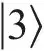
间的电偶极矩矩阵元，N为原子数密度，ϵ0为自由空间的介电常数。在线中央，折射率为1，等式（1）分母中的第二项的影响超过第一项，占主导地位。折射率图谱的一个重要特性是共振时群速度色散为0（参见文献16），即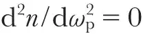
，就最低阶来说，脉冲传播过程中保持波形不变。所建立的量子干涉允许脉冲传输通过在其他状态下透射系数仅为e－110（Tc以下）的原子云，从而产生了极陡的色散图谱和极低的群速度。 英文
我们注意到图2中的曲线中心与探测共振频率偏离了0.6 MHz。这是由于耦合激光场使态
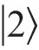
和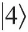
发生了耦合，从而能级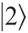
有交流斯塔克位移和与之相应的2→3跃迁的谱线位移。由于透明度峰值和等于1的折射率是在两光子共振时获得的，这就导致1→3跃迁共振频率下的折射率不为1。二者之间的差别与交流斯塔克位移成比例，也因此与耦合激光强度成比例，这点对下文所述的预估非线性折射率至关重要。 英文
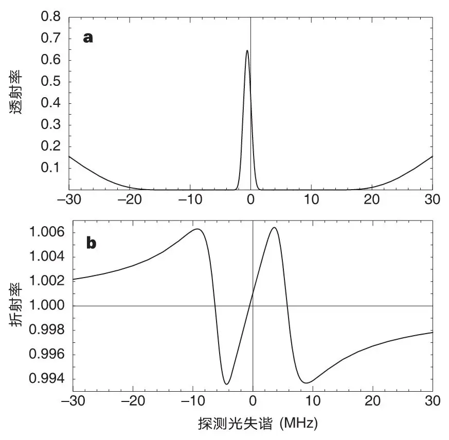
图2．探测光失谐的影响。a，透射率曲线。计算所得的探测透射率与激光频率相对原子云从
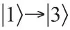
共振失谐的函数关系，该原子云被降温至450 nK，峰值密度为3.3×1012 cm－3，长度为229 μm（对应图1a中插图（ii）的原子云）。耦合激光与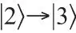
的跃迁共振，功率密度为52 mW·cm－2。b，折射率曲线。计算所得的折射率与a中相同参数下探测光失谐的函数关系。达到共振时斜率的陡度与投射光脉冲的群速度成反比，并且由耦合激光强度所控制。要注意到，通过耦合激光场，态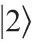
和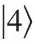
产生耦合所造成的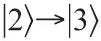
跃迁的交流斯塔克位移的存在，导致透射率曲线的中心与折射率曲线的中心相差0.6 MHz。折射率曲线的偏移引起了文中所述的非线性折射率现象。 英文
实验图示如图1a所示。直径2.5 mm的耦合光束沿x轴传播，其线偏振方向平行于磁场B。探测光束直径0.5 mm、σ－偏振，沿z轴传播。原子云在横向x，y方向的尺寸和位置由探测光束通过原子云后成像在电荷耦合器件（CCD）摄像机上的透射率剖面获得。插图（i）为一凝聚态的图像。当原子在调谐至与共振频率接近的5 mW·cm－2的探测光束中暴露10 μs的过程中，另一55 mW·cm－2的耦合激光光束同时存在。f / 7成像光学受衍射限制分辨率为7 μm。 英文
在脉冲延迟的实验中，利用一针孔（置于透镜系统的外成像面）来只选择那些通过原子云中心15 μm的部分探测光束，这部分原子柱的数密度最大。针孔的轮廓在插图（i）中以虚线圆标记出。 英文
耦合光束和探测光束都源于相同的染料激光。耦合激光器的频率由一声光调制器（AOM）设定为
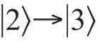
的共振频率。这里我们将塞曼位移和上文所提到的交流斯塔克位移都考虑在内。 英文
相应的探测共振频率由测量探测光束的透射率与频率的函数关系得出。我们运用一快速频率扫描，在50 μs内扫描32 MHz，通过透射峰值来确定共振。扫描受另一AOM控制。然后将频率固定在共振频率，探测脉冲的时域波形就由控制AOM的无线电频率驱动来产生。所得脉冲是一个近高斯分布，半高宽为2.5 μs。拉比频率Ωp=0.20 A时的峰值功率为1 mW·cm－2。这里取爱因斯坦自激系数A为6.3×107 rad·s－1。为避免脉冲失真，我们给予其足够的持续时间来使其傅里叶分量包含在透明度峰之中。 英文
在耦合光束打开4 μs之后探测脉冲沿z轴发射（耦合场保持打开100 μs）。由于上文所讨论的磁过滤，所有的原子最初都处于
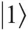
态，只有耦合激光存在时，这是一个暗态。当接收到光脉冲时，原子绝热演化，导致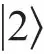
态的概率幅与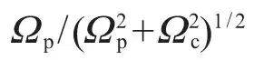
相等，其中Ωp是探测光拉比频率。为了实现相干叠加态，能量从探测光脉冲的前沿传递到原子和耦合激光场。在探测光脉冲末端，原子绝热地回到原始态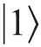
，能量返回到探测脉冲后端，但没有净能量和动量转移到原子云。由于折射率等于1，在探测脉冲进入介质时电场不变。随着群速度降低，总能量密度必须提高才能保证单位面积功率不变。这种提高就体现在脉冲在原子云中传播时，能量在原子以及耦合激光场的储存。 英文
这些脉冲在穿过原子云后被一光电倍增管（响应时间为3 ns）所记录。光电倍增管的输出信号被150 MHz带宽的放大器放大，波形显示在一数字示波器上。在摄像机前放置一“转向”镜，我们就可以控制探测光束是射入摄像机还是射入光电倍增管中。 英文
探测光脉冲延迟测量的结果如图3所示。前面的脉冲是没有原子存在时的参考脉冲。脉冲穿过长度为229 μm的原子云时被减慢，延迟了7.05 μs（见图1a，插图（ii））。由此可得光速为32.5 m·s－1。实验中我们使用的耦合激光强度为12 mW·cm－2，对应拉比频率为Ωc=0.56 A。原子云被冷却至450 nK（临界温度Tc以上15 nK）。峰值密度为3.3×1012 cm－3，原子总数为3.8×106。根据这些数据我们可以计算得出在没有耦合激光时，脉冲透射系数为e－63。实验中确实观察到当耦合激光关闭时，探测脉冲完全被原子所吸收。本实验在低温下进行且原子云尺寸相对较小，由空间变化的塞曼位移引起的非均匀展宽（约20 kHz）可以忽略。 英文
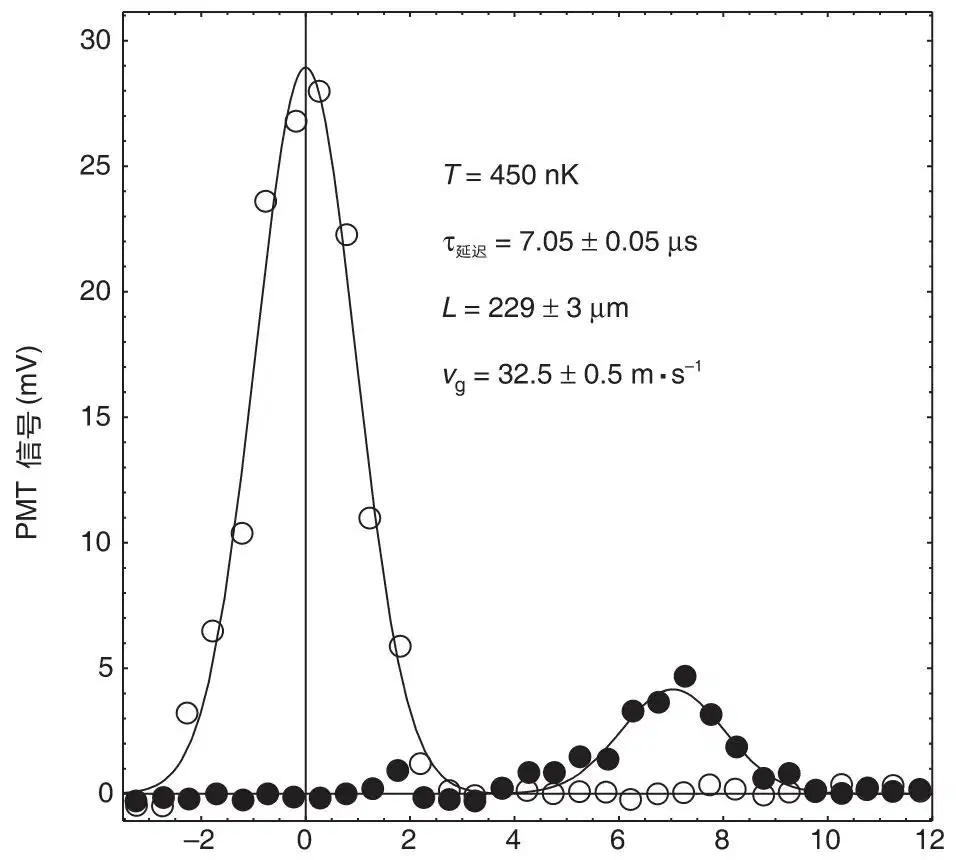
图3．脉冲延迟测量。前面的脉冲（空心圆）为系统中没有原子的参考脉冲。另一个脉冲（实心圆）在229 μm长的原子云中被延迟7.05 μs（见图1a插图（ii））。相应的光速为32.5 m·s－1。曲线为测量脉冲的高斯拟合。 英文
沿z方向的原子云尺寸通过另一CCD摄像机捕获。为了达到这个目的，我们运用了另一独立的1 mW·cm－2的激光束沿垂直的y轴传播，并调谐到比F=2→3跃迁低20 MHz。原子在10 μs的曝光成像之前，先被泵到F=2的基态10 μs。我们使用衍射极限f / 5的光学器件在原子云之后对激光束的纵向透射率剖面进行成像。一个例子如图1a插图（ii）所示，其中由云的椭圆轮廓可清楚看见磁阱的不对称性。值得注意的是，成像激光不会与耦合激光及探测脉冲同时施加，并且对于每个记录的脉冲或CCD图片，都加载一新的原子云。 英文
我们在原子冷却到温度2.5 μK和50 μK之间测量了一系列脉冲延迟和相应的云尺寸。从这些数据对中，我们获得了相应的传播速度（图4）。空心圆对应耦合光强52 mW·cm－2（Ωc=1.2A）。光速与原子数密度成反比（等式（1）），而原子数密度随温度降低而增大，当凝聚态形成时原子数密度进一步增加。实心圆对应耦合光强12 mW·cm－2。与等式（1）一致，可以看到耦合光强的降低引起群速度的减小。在最初制备的几乎纯净的玻色–爱因斯坦凝聚态（凝聚比率大于等于90%）原子云中，我们获得了17 m·s－1的光脉冲传播速度。在脉冲传播过程中和传播后原子云是否保持凝聚不在本文讨论范围之内。 英文
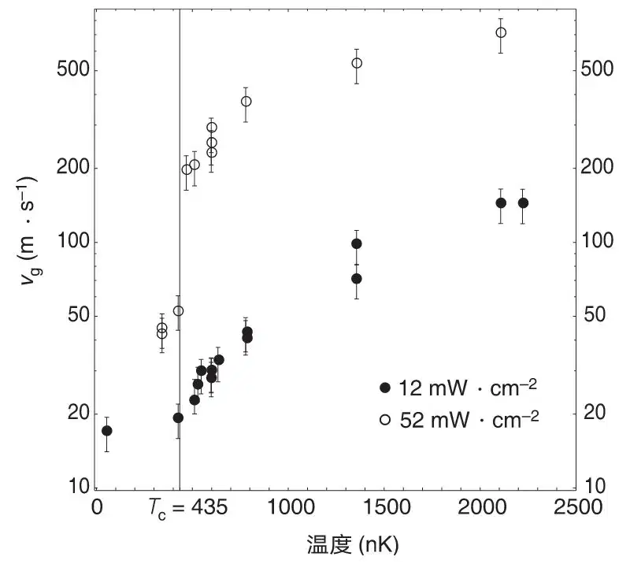
图4．光速与原子云温度的关系。由于原子数密度的增大，光速随温度的降低而降低。空心圆对应耦合光强52 mW·cm－2，实心圆对应耦合光强12 mW·cm－2。温度Tc标记出了玻色–爱因斯坦凝聚的临界转变温度。Tc以下的群速度减小是由形成凝聚态时原子云密度增大而引起。通过成像测量，我们得到200 nK时最大的原子数密度为8×1013 cm－3。密集凝聚态成分占所有原子的60%，并且总原子数密度是Tc时非凝聚态云密度的16倍。50 nK时的光速测量是在凝聚分数≥90%的云中进行的。由于态
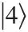
造成的有限的退相率不允许脉冲穿过最密集的云。这个问题可以通过文中所述的调谐激光至D1线的方法来解决。 英文
由耦合激光激发的
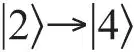
态的跃迁（耦合激光与该跃迁之间存在60 MHz失谐），使得所建立的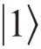
和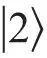
态的相干具有一个有限衰变率，并限制了探测光脉冲的透射。退相率与耦合激光的功率密度成比例，我们预期并发现，探测脉冲具有一个透射率峰值，该值不受耦合强度以及随此强度线性减小的速度的影响。退相时间由透射率–脉冲延迟的半对数曲线的斜率决定[19]。在耦合光强为12 mW·cm－2时，对于温度刚刚超过Tc的原子云，我们测量到退相时间为9 μs。 英文
巨克尔非线性在量子光学领域具有很大的吸引力，例如光学压缩、量子非破坏性以及非定域性等方面的研究。近期的研究还指出，这些现象很可能通过电磁感应透明来获得[20]。本文报道了（据我们所知）首次对这样一种非线性的测量。零失谐探测光的折射率表达式为n=1+（n2 Ic），其中Ic为耦合激光强度，n2为交叉相位非线性折射率。正如图2b所示，非线性项n2 Ic等于探测光在共振时的折射率曲线斜率与耦合激光激发的
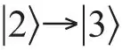
跃迁的交流斯塔克位移之积。因此n2可以用以下公式表示（见等式（1））：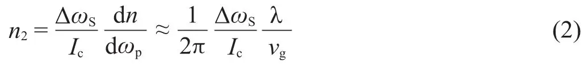
其中∆ωS为交流斯塔克位移，与Ic成比例，λ为探测跃迁的光波长。当耦合激光强度为40 mW·cm－2时我们测量到一1.3×106 rad·s－1的交流斯塔克位移。而对于测量所得的17 m·s－1的群速度（图4），可得非线性折射率为0.18 cm2·W－1。该非线性折射率是在冷铯原子中相应值的106倍[21]。 英文
应用上文所述的可避免
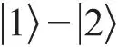
退相率的系统（通过调谐至钠D1线而获得），可以对这里所使用的方法进一步发展以得出在建立电磁感应透明过程中发生的双凝聚态碰撞诱导失相率（参见文献22和23）。在这种情况下，态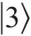
概率幅的平方在脉冲传播过程中可以保持在10－5以下，因此不存在凝聚态加热。由于我们装置频率稳定性的提高以及耦合强度的减小，更低的光速也是可能实现的，可能是几厘米每秒的量级，可与玻色–爱因斯坦凝聚中的音速相比。在此条件下我们预期光脉冲传播通过凝聚体时有声子被激发。通过谨慎调谐另一激光束至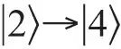
跃迁，应该有可能在单光子水平上演示光学开关[24]。最后本文指出，光束在原子云传播过程中，光脉冲在z方向被压缩，比率为c/vg。对于本实验所采用的参数，这导致脉冲的空间范围仅为43 μm。 英文
（崔宁 翻译；石锦卫 审稿）